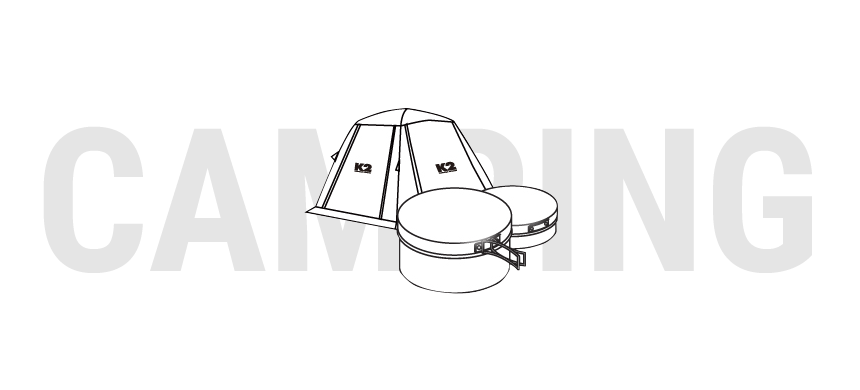

캠핑시 주의해야 할 점은 야생동물이 많은 지역은 가급적 피해야하여, 장마시 강변지역은 강물이 범람 할 수 있으므로 피해야 합니다. 벌집이 있는 나무 아래의 텐트설치는 큰 사고를 당할 수 있으며, 캠프파이어시는 산불이 나지 않게 조심해야 합니다. 캠핑시엔 많은 장비가 필요합니다. 캠핑 목적과 상황을 상상하며 차근히 목록을 작성하고 하나하나씩 장비를 챙겨봅시다.

텐트
여름 해변가에는 입구가 크고 시원하게 트인 텐트가 적당하며, 산악인 경우 플라이가 있고 입구가 작은 텐트를 설치하는 것이 좋습니다.
침낭
침낭의 충전재는 거위털의 솜털이 많이 함유된 것이 좋으며 겉감은 고밀도 이면서 통기성이 좋아 다운이 침낭 밖으로 빠져 나오지 않고 공기를 잘 빨아드려 침낭이 쉽게 부풀 수 있는 것이 좋습니다. 침낭 밑에 매트리스를 깔아 땅에서 올라오는 습한 공기를 차단 하는것도 좋은 방법입니다.
렌턴
가스렌턴을 사용할 시에는 공기가 꼭 통할 수 있는 텐트에 통풍구가 있는지 꼭 확인해야 합니다.
코펠
코펠의 재질은 일반적으로 알루마이트나 가공된 알루미늄제 혹은 스테인레스를 쓰며 요즈음은 특수 코팅처리가 되어 눌러붙지 않도록 제작된 제품도 출시되고 있습니다. 대개 코펠의 단점은 손잡이 부분이 망가져 못쓰는 경우가 많으므로 이부분이 튼튼한 것을 선택 하는 것이 요령입니다.